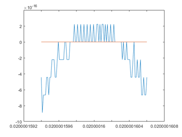
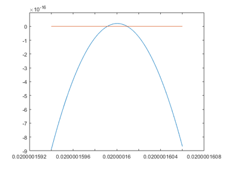

DEMOLONG Long numbers and intervals
Contents
- Definition of long numbers
- Conversion
- Output of long numbers
- Arithmetic operations
- Output of long intervals
- Interval and non-interval operations
- Conversion between long and double
- Long numbers with error term
- Specifying extremely small errors
- Taylor series: an example
- Ill-conditioned polynomials
- Sample programs
- Enjoy INTLAB
The purpose of the long toolbox was to compute rigorous bounds for the value of certain standard functions. Those values are needed to initialize the INTLAB system. The long toolbox is slow, but fast enough to do the job.
setround(0) % set rounding to nearest longprecision(0); % default option
Definition of long numbers
Long numbers are stored in midpoint radius representation. The midpoint is stored in an array of precision to be specified, the error is stored in one number. Long numbers or vectors are generated by the constructor long:
x = long(7) V = long([-1;3])
long x = 7.000000000000 * 10^+0000 long V = -1.000000000000 * 10^+0000 3.000000000000 * 10^+0000
Long vectors are always column vectors (or forced to column vectors).
Conversion
Conversion of double to long by the constructor "long" is always into the current internal precision.
The internal precision may be specified by "longprecision". The call without input parameter gives the current working precision in decimals, the call with input parameter sets working precision.
p = longprecision longprecision(50)
p =
27
ans =
55
Now, the statement "x = long(7)" generates a long number with approximately 50 decimal digits. These are approximately 50 digits because the internal representation is to some base beta, a power of 2.
Output of long numbers
Output is usually to a little more than double precision. If you want to see more digits, say k, use "display" with second parameter equal to k. To see all digits, use k=0.
longprecision x = 1/long(7) display(x,40) display(x,0)
ans =
55
long x =
1.428571428571 * 10^-0001
long x =
1.428571428571428571428571428571428571428571 * 10^-0001
long x =
1.428571428571428571428571428571428571428571428571184204 * 10^-0001
Output of long numbers is not rigorous. All but a few of the last digits are correct.
Arithmetic operations
Long operations +,-,*,/ and ^ are supported. Note that operations on vectors are always performed elementwise.
x = [ long(3) ; -7 ] x*x
long x = 3.000000000000 * 10^+0000 -7.000000000000 * 10^+0000 long ans = 9.000000000000 * 10^+0000 4.900000000000 * 10^+0001
Output of long intervals
The display routine takes uncertainties into account. Only the correct digits plus some extra are displayed.
longprecision(50); x = long(1)/37; display(x,0) for i=1:100 x=x*x; x=x*37; end display(x,0)
long x = 2.702702702702702702702702702702702702702702702702480790 * 10^-0002 long x = 2.702702702702702702702607 * 10^-0002
Interval and non-interval operations
Computing with uncertainties may be switched off by
longinit('WithoutErrorTerm') longprecision(50); x = long(1)/37; display(x,0) for i=1:100 x=x*x; x=x*37; end display(x,0)
===> Long arithmetic computations without error terms long x = 2.702702702702702702702702702702702702702702702702480790 * 10^-0002 long x = 2.702702702702702702702607059944376258877795697765239694 * 10^-0002
In this case all digits including incorrect ones are displayed. Computing without error term is a usual long precision arithmetic with specified precision. Note that scalar operations suffer from quite some interpretation overhead.
Conversion between long and double
Conversion from long to double is approximately to nearest, conversion to interval is rigorous.
For example, in the following the function "longpi" calculates "pi" to the specified longprecision, "IntPi" is a true inclusion of the transcendental number "pi".
longinit('WithErrorTerm'); longprecision(100); Pi = longpi; display(Pi,0) flptPi = long2dble(Pi) IntPi = long2intval(Pi) format long infsup(IntPi)
===> Long arithmetic computations with error terms, i.e. valid long error bounds
long Pi =
3.141592653589793238462643383279502884197169399375105820974944592307816406 \
286208998628034825342116 * 10^+0000
flptPi =
3.1416
intval IntPi =
[ 3.1415, 3.1416]
intval IntPi =
[ 3.14159265358979, 3.14159265358980]
Long numbers with error term
Long numbers may be specified with an explicit error term. For example,
longprecision(50); x = long(-1.5) display(x,0) x = addlongerror(x,1e-40) display(x,0)
long x = -1.500000000000 * 10^+0000 long x = -1.500000000000000000000000000000000000000000000000000000 * 10^+0000 long x = -1.500000000000 * 10^+0000 long x = -1.500000000000000000000000000000000000000000 * 10^+0000
defines x to be an interval with midpoint -1.5 and radius approximately 10^(-40). Only meaningful digits are stored and displayed.
Specifying extremely small errors
For very small errors leaving the range double precision floating point numbers, the error may be specified by the mantissa and the exponent of the error:
longprecision(50); x = long(2^-1000)^2; x = addlongerror(x,1,-620)
long x = 8.709809816219 * 10^-0603
The final x, which is 2^(-2000), is afflicted with an error of 10^(-620).
Taylor series: an example
As an example, the following code computes the value of E = exp(x) by a Taylor series:
p = 100; longprecision(p); x = -30; t = 1; T = long(1); E = T; k = 0; while abs(t)>10^(-p) k = k+1; t = t*x/k; T = T*x/k; E = E + T; end k exp(x) display(E,0)
k =
225
ans =
9.357622968840175e-14
long E =
9.357622968840174604915832223378706744958322688935880416413318619960842833 * 10^-0014
Note that for large negative values of x there quite some cancellation. This can be seen by
x = 30; t = 1; T = long(1); E = T; k = 0; while abs(t)>10^(-p) k = k+1; t = t*x/k; T = T*x/k; E = E + T; end k 1/exp(x) display(1/E,0)
k =
225
ans =
9.357622968840175e-14
long ans =
9.357622968840174604915832223378706744958322688935880416413318619960842833 \
767616873665639476198700545791 * 10^-0014
Ill-conditioned polynomials
Consider the following polynomial:
P = inline(' 4999*x.^6 - 200*x.^5 + 102*x.^4 - 2*x.^3 - 2500*x.^2 + 100*x - 1 ')
P =
Inline function:
P(x) = 4999*x.^6 - 200*x.^5 + 102*x.^4 - 2*x.^3 - 2500*x.^2 + 100*x - 1
This is an example of a Bugeaud-Mignotte polynomial. The general form is
( X^n - aX + 1 )^k - 2X^(nk-k)(aX-1)^k
where a>=10, n>=3 and k>=2.
Those polynomials are constructed to have a pair of very close real roots near c=1/a+1/a^(n+1). A graph using floating-point arithmetic near c looks as follows:
e = 3e-8; c = 1/50+1/50^4; x = c*(1+linspace(-e,e)); close plot(x,P(x),x,0*x)
From the graph it is not clear whether the polynomial has no, a double or two real roots in the interval c*[1-e,1+e]. An evaluation using the long package yields the following:
y = long2dble(P(long(x))); close plot(x,y,x,0*x)
Warning: input array for long forced to be column vector
Sample programs
For sample programs using long numbers, see for example the source codes of long\longpi.m or long\@long\exp.m .
Enjoy INTLAB
INTLAB was designed and written by S.M. Rump, head of the Institute for Reliable Computing, Hamburg University of Technology. Suggestions are always welcome to rump (at) tuhh.de